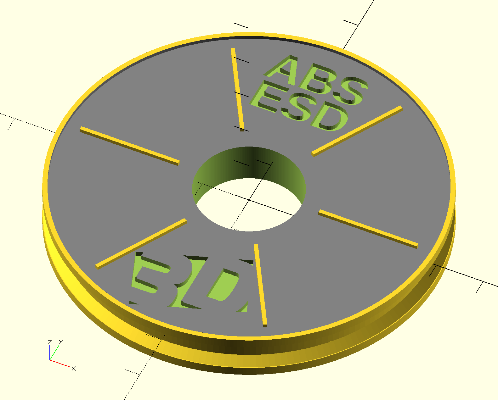

Poland - Kraków
Tranquillity in Poland - Jewish heritage, klezmer, Wawel castle, PianoMad campaign, little busker, first remote job offer, too spicy lamb, sunny afternoon on a boat, MIDI synthesis, almost missed bus.

Tranquillity in Poland - Jewish heritage, klezmer, Wawel castle, PianoMad campaign, little busker, first remote job offer, too spicy lamb, sunny afternoon on a boat, MIDI synthesis, almost missed bus.
We'll explore how to choose and set up hardware for our ADS-B receiver, go through the various decisions and show a concrete example.

My nomad travels started in Wrocław, Poland. Open-air office, sleeping in the wild and other stories.

Every moment tens of thousands airplanes are in the air and many are flying around. We can analyze their flights. In this series we will explore how to capture flight information using a DIY ADS-B receiver based on Raspberry Pi.

I've decided to work while traveling and I've already made the first necessary steps. Here's my motivation and how I'm proceeding. Since a lot of people wanted to hear from me I'd like to share the thoughts and stories from the journey.
 We'll see how to create an STL model of a stylized filament reel with a logo from SVG and some text without clicking the mouse. Yes we'll write it procedurally in OpenSCAD, use templating and automate the whole thing. We'll see how OpenSCAD is a really natural tool for programmer and it very easy to start playing with and get impressive results.
In this article I'd like to summarize lessons learned during three years of development of software for music analysis, visualization and machine learning and of my life. You can find a lot of experience and advice not to repeat the mistakes I did.
The goal: see what you hear in music. When you think you're genius and can do all features at once, stop... It's a trap! Go by small steps and get much further.
If you're using Hive sooner or later you'll need to create user defined functions (UDFs). Chances are such a function would use a code that depends on the Guava library. And it is not that unlikely that the required Guava version would be newer than Hive's. Then you're running into a trouble. Hopefully this article save you much of the pain I had to suffer to make it working. Let's make a simple UDF and fix it using both maven and gradle.

Turn a poor smartphone-camera photo of a document or whiteboard into a nice black & white or color "scan" that can be printed or converted to PDF. It works for text / line drawings / sheet music. The method is described here along with a Photoshop tutorial (and a Photoshop action for download) and a handful of examples.

SMS-tools (Spectral modeling synthesis) is a Python education library for audio signal analysis and modeling. It serves for practical excercises within the Audio Signal Processing for Music Applications course at Coursera. It was written to run Ubuntu Linux and Python 2.7. Here we see how to run it on latest Python 3.4 on Mac OS X Yosemite.